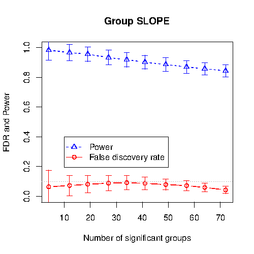
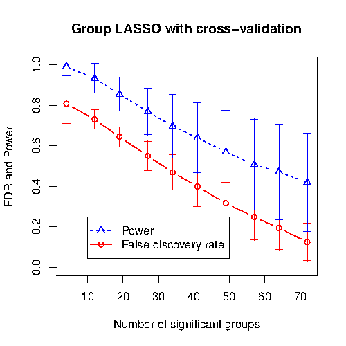
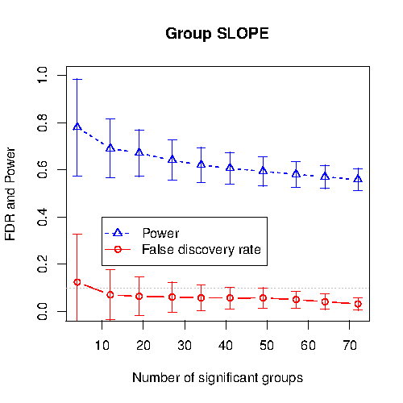
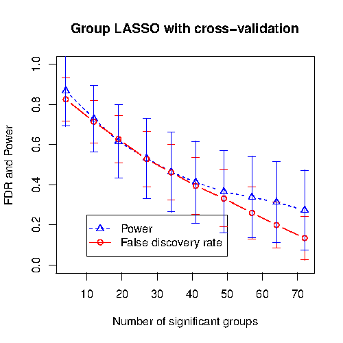
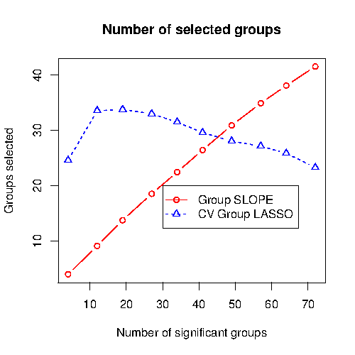

<!doctype html>
<html lang="en">

	<head>
		<meta charset="utf-8">

    <title>Identification of significant genetic variants via SLOPE, and its extension to Group SLOPE</title>

		<meta name="description" content="Tulane University Department of Mathematics.">
		<meta name="author" content="Alexej Gossmann">

		<meta name="apple-mobile-web-app-capable" content="yes" />
		<meta name="apple-mobile-web-app-status-bar-style" content="black-translucent" />

		<meta name="viewport" content="width=device-width, initial-scale=1.0, maximum-scale=1.0, user-scalable=no">

		<link rel="stylesheet" href="css/reveal.min.css">
		<link rel="stylesheet" href="css/theme/simple.css" id="theme">
		<link rel="stylesheet" href="css/theme/simple-custom.css">

		<!-- For syntax highlighting -->
		<link rel="stylesheet" href="lib/css/zenburn.css">

		<!-- If the query includes 'print-pdf', include the PDF print sheet -->
		<script>
			if( window.location.search.match( /print-pdf/gi ) ) {
				var link = document.createElement( 'link' );
				link.rel = 'stylesheet';
				link.type = 'text/css';
				link.href = 'css/print/pdf.css';
				document.getElementsByTagName( 'head' )[0].appendChild( link );
			}
		</script>

		<!--[if lt IE 9]>
		<script src="lib/js/html5shiv.js"></script>
		<![endif]-->

    <!-- MathJax interation, copied from http://cryptotoxin.github.io/coding/math-symbols-latex-and-markdown/ and others-->
    <script type="text/x-mathjax-config">
      MathJax.Hub.Config({
        tex2jax: {inlineMath: [["$","$"]]}
      });
      MathJax.Hub.Config({TeX: {Macros:{subscript:['_{#1}',1],superscript:['^{#1}',1]}}});
    </script> 
    <script type="text/javascript"
      src="http://cdn.mathjax.org/mathjax/latest/MathJax.js?config=TeX-AMS-MML_HTMLorMML">
    </script>
	</head>

	<body>

		<div class="reveal">

			<!-- Any section element inside of this container is displayed as a slide -->
			<div class="slides">
        <section data-markdown>
          <script type="text/template">
## Identification of significant genetic variants via *SLOPE*, and its extension to *Group SLOPE*

### Alexej Gossmann
#### *WIP* of presentation for ACMBCB 2015
### 2015/9/?
          </script>
        </section>

        <section data-markdown>
          <script type="text/template">
## Part 1. The SLOPE method

0. Model formulation 
1. SLOPE under orthogonal designs
2. SLOPE under non-orthogonal designs
3. Dealing with unknown noise level and intercept
4. Application to DNA sequence data

<br>
... *to be written sometime before September* ...
          </script>
        </section>

        <section data-markdown>
          <script type="text/template">
## Part 2. Group SLOPE

1. Model motivation and formulation 
2. Computational algorithms
3. Regularizing sequence
4. Simulation results
          </script>
        </section>

          <section data-markdown>
            <script type="text/template">
## Group SLOPE Motivation

* SLOPE works best if the predictor variables have very small pair-wise correlations.
* Typically, genetic data is highly correlated.

<br>
$\Rightarrow$ Genetic data needs to be pruned to a great extent, in order to get good results with SLOPE.
            </script>
          </section>

          <section data-markdown>
            <script type="text/template">
## Group SLOPE Motivation

* Often the data can be subdivided into groups with possibly a high within group correlation but a low between group correlation.
* Specifically in genomic data analysis, SNPs in a gene or genes in a pathway can be available as prior knowledge along with a sparsity assumption.

<br>
$\Rightarrow$ Select or drop entire groups rather than individual significant predictors.
            </script>
          </section>

          <section data-markdown>
            <script type="text/template">
### Group LASSO (M. Yuan and Y. Lin (2006), and others)

* $\mathbf{y} = X\mathbf{b} + \mathbf{e}$, $\mathbf{y}\in\mathbb{R}^n$, $X\in\mathbb{R}^{n\times p}$, $\mathbf{b}\in\mathbb{R}^p$, $\mathbf{e}\sim\mathrm{N}(0, \sigma_e^2 I)$. 

* The predictor variables $\mathbf{b}$ are divided into $J$ groups of sizes $p_1, p_2, \cdots, p_J$, i.e. $\mathbf{b} = (\mathbf{b}_1^T, \mathbf{b}_2^T, \ldots, \mathbf{b}_J^T)^T$ with $\mathbf{b}_i \in \mathbb{R}^{p_i}$. 

* Estimate $\mathbf{b}$ as the solution to the convex minimization problem

$$\min\subscript{\mathbf{b}\in\mathbb{R}^p} \frac{1}{2} \left\lVert\mathbf{y} - X\mathbf{b}\right\rVert\subscript{2}^2 + \sum\subscript{i=1}^J \lambda\subscript{i} \sqrt{p\subscript{i}}\left\lVert\mathbf{b}\subscript{i}\right\rVert\subscript{2}.$$

* For any $i$ this procedure either keeps the entire block $\mathbf{b}\subscript{i}$ non-zero, or sets all its components to zero.
            </script>
          </section>

          <section data-markdown>
            <script type="text/template">
## Group SLOPE Model

* Group SLOPE is related to Group LASSO in the same way in which SLOPE is related to LASSO.

* Define the Group SLOPE minimization problem as

$$\min\subscript{\mathbf{b}\in\mathbb{R}^p} \frac{1}{2} \left\lVert\mathbf{y} - X\mathbf{b}\right\rVert\subscript{2}^2 + \sum\subscript{i=1}^J \lambda\subscript{i} \sqrt{p\subscript{(i)}}\left\lVert\mathbf{b}\subscript{(i)}\right\rVert\subscript{2},$$

where $\sqrt{p\subscript{(1)}}\left\lVert \mathbf{b}\subscript{(1)} \right\rVert\subscript{2} \geq \sqrt{p\subscript{(2)}}\left\lVert \mathbf{b}\subscript{(2)} \right\rVert\subscript{2} \geq \ldots \geq \sqrt{p\subscript{(J)}}\left\lVert \mathbf{b}\subscript{(J)} \right\rVert\subscript{2}$.
            </script>
          </section>

          <section data-markdown>
            <script type="text/template">
## Computational algorithms

* A group-wise generalization of the algorithm in the original SLOPE paper (Bogdan, van den Berg,  Su, Candes, 2013).

* The minimization problem can be rewritten as a sum of a convex function and a differentiable convex function with a Lipschitz continuous derivative:

$$\min\subscript{\mathbf{c}\in\mathbb{R}^p} f\subscript{1}(\mathbf{c}) + f\subscript{2}(\mathbf{c}),$$

$$\begin{eqnarray} 
f\subscript{1}(\mathbf{c}) &=& \frac{1}{2} \left\lVert\mathbf{y} - X D^{-1} \mathbf{c}\right\rVert\subscript{2}^2, \nonumber \\\\\\
f\subscript{2}(\mathbf{c}) &=& \sum\subscript{i=1}^J \lambda\subscript{i} \left\lVert\mathbf{c}\subscript{(i)}\right\rVert\subscript{2}, \nonumber\\\\\\
\mathbf{c}\subscript{i} &=& \sqrt{p\subscript{i}}\mathbf{b}\subscript{i}. \nonumber
\end{eqnarray}$$
            </script>
          </section>

          <section data-markdown>
            <script type="text/template">
              <section style="text-align: left;">

### Proximal gradient method for Group SLOPE 

$\varepsilon\in\left(0, \min\left(1,\frac{1}{\xi}\right) \right)$, $\mathbf{b}^{(0)}\in\mathbb{R}^p$, $\mathbf{c}^{(0)} = D\mathbf{b}^{(0)}$

`for` $k = 0, 1, 2, \dots$ `do`

$$\begin{eqnarray} 
\quad \gamma\subscript{k} &\in& \left[\varepsilon,\frac{2}{\xi}-\varepsilon\right] \nonumber \\\\\\
\quad \mathbf{c}^{(k+1)} &\gets& \mathrm{prox}\subscript{\gamma\subscript{k} f\subscript{2}}\left( \mathbf{c}^{(k)} - \gamma\subscript{k} \left(XD^{-1}\right)^T\left(X\mathbf{b}^{(k)} - \mathbf{y}\right) \right) \nonumber \\\\\\
\quad \mathbf{b}^{(k+1)} &=& D^{-1} \mathbf{c}^{(k+1)} \nonumber
\end{eqnarray}$$

`end for`
            </script>
          </section>


          <section data-markdown>
            <script type="text/template">
### Computing the prox

Proximal mapping:

$$\mathrm{prox}\subscript{f\subscript{2}}(y) = \mathrm{argmin}\subscript{\mathbf{x}\in\mathbb{R}^p} \frac{1}{2}\left\lVert\mathbf{y} - \mathbf{x}\right\rVert\subscript{2}^2 + \sum\subscript{i=1}^J \lambda\subscript{i} \left\lVert\mathbf{x}\subscript{(i)}\right\rVert\subscript{2}.$$
            </script>
          </section>

          <section data-markdown>
            <script type="text/template">
### Computing the prox

### Lemma

If $\tilde{\mathbf{x}} = (\tilde{x}\subscript{1},\dots,\tilde{x}\subscript{J})^T \in \mathbb{R}^J$ is the solution of the minimization problem

$$\min\subscript{\tilde{\mathbf{x}}\in\mathbb{R}^J} \frac{1}{2}\sum\subscript{i=1}^{J} \left(\left\lVert\mathbf{y}\subscript{i}\right\rVert\subscript{2} - \tilde{x}\subscript{i} \right)^2 + \sum\subscript{i=1}^J \lambda\subscript{i} \left| \tilde{x} \right|\subscript{(i)}.$$

Then the solution to $\mathrm{prox}_{f_2}(y)$ is given by

$$\begin{eqnarray} 
\mathbf{x} &=& (\mathbf{x}\subscript{1}^T, \mathbf{x}\subscript{2}^T, \dots, \mathbf{x}\subscript{J}^T)^T \mathrm{with} \nonumber \\\\\\
\mathbf{x}\subscript{i} &=& \frac{\tilde{x}\subscript{i}}{\left\lVert\mathbf{y}\subscript{i}\right\rVert\subscript{2}} \mathbf{y}\subscript{i}, \quad \forall i\in\{1,\dots,J\},
\end{eqnarray}$$

where $\mathbf{y}\subscript{i}\in\mathbb{R}^{p_i}$ denotes the $i$th block of $\mathbf{y}\in\mathbb{R}^p$ for $i\in\{1,\dots,J\}$.
            </script>
          </section>

          <section data-markdown>
            <script type="text/template">
### Computing the prox

The Lemma combined with the fast prox algorithm for the SLOPE method (Algorithm 4 in Bogdan, van den Berg, Sabatti, Su, Candes, 2014) implies a simple algorithm for the prox function.
            </script>
          </section>

          <section data-markdown>
            <script type="text/template">
              <section style="text-align: left;">
### Algorithm computing the prox

$\mathbf{x} = (\mathbf{x}\subscript{1}^T,\dots, \mathbf{x}\subscript{J}^T)^T$

$\mathbf{y} = (\mathbf{y}\subscript{1}^T,\dots, \mathbf{y}\subscript{J}^T)^T$

$\tilde{\mathbf{y}} = (\tilde{y}\subscript{1},\dots,\tilde{y}\subscript{J})^T = (\left\lVert\mathbf{y}\subscript{1}\right\rVert\subscript{2}, \left\lVert\mathbf{y}\subscript{2}\right\rVert\subscript{2}, \dots, \left\lVert\mathbf{y}\subscript{J}\right\rVert\subscript{2})^T$ 

$\tilde{\mathbf{x}} = (\tilde{x}\subscript{1},\dots,\tilde{x}\subscript{J})^T = \mathrm{prox}\subscript{J\subscript{\lambda}}\left( \tilde{\mathbf{y}} \right)$

`for` $k = 1, 2, \dots, J$ `do`

$\quad\mathbf{x}\subscript{i} = \frac{\tilde{x}\subscript{i}}{\tilde{y}\subscript{i}} \mathbf{y}\subscript{i}$

`end for`

where $\mathrm{prox}\subscript{J\subscript{\lambda}}$ is the prox function of SLOPE.
            </script>
          </section>

          <section data-markdown>
            <script type="text/template">
## Regularizing sequence

* In order to (approxiametely) control the false discovery rate, we need to select suitable $\lambda\subscript{1} \geq \lambda\subscript{2} \geq \dots \geq \lambda\subscript{J}$.

* Can procedures available for the SLOPE method be generalized for Group SLOPE?

            </script>
          </section>

          <section data-markdown>
            <script type="text/template">
## Regularizing sequence

### A simplified special case

* Assume that the columns of $X$ are all equal within each block but different between different blocks. 


* Collapse $X\in\mathbb{R}^{n\times p}$ into $\tilde{X}\in\mathbb{R}^{n\times J}$, and let $\tilde{\mathbf{b}}\in\mathbb{R}^J$ have entries $\tilde{b}\subscript{i} = p\subscript{i} {\mathbf{b}\subscript{i}}\subscript{1}$. Then the objective function becomes:
  
$$\frac{1}{2}\left\lVert\mathbf{y} - \tilde{X}\tilde{\mathbf{b}}\right\rVert\subscript{2}^2 + \sum\subscript{i=1}^J \lambda\subscript{i} \left| \tilde{b}\subscript{(i)} \right|.$$

* This has the form of the regular SLOPE problem, and $\lambda\subscript{1} \geq \lambda\subscript{2} \geq \dots \geq \lambda\subscript{J}$ can be constructed by the available procedure.
            </script>
          </section>

          <section data-markdown>
            <script type="text/template">
## Regularizing sequence

For a general model matrix $X$ the above motivates the following approach:

1. Construct a matrix $\tilde{X}$ by taking its $i$th column to be the average of the columns of the $i$th block of $X$. 

2. Normalize the columns of $\tilde{X}$ to have norms equal to one. 

3. Construct a regularizing sequence $\lambda\subscript{1} \geq \lambda\subscript{2} \geq \dots \geq \lambda\subscript{J}$ using the Monte Carlo based method for SLOPE.
            </script>
          </section>

          <section data-markdown>
            <script type="text/template">
## Simulation results

### Simulated data

* $n = 200$, $p =  1050$, $\mathbf{y} = X\mathbf{b} + \mathbf{e}$ with $\mathbf{e} \sim \mathrm{N}(0,I)$. 

* The $p$ predictors are divided into 90 groups; 30 groups of size 5, 30 groups of size 10, and 30 groups  of size 20.

* The non-zero variables are set to be $\pm 1$ (same sign within a block).
            </script>
          </section>

          <section data-markdown>
            <script type="text/template">
## Simulation results

### Simulated data

* We consider ten sparsity levels (proportion of significant groups among their total number). 

* At each sparsity level we consider:

  - A case with very high within group correlations ($\approx 0.99$) and very low between group correlations ($\approx 0.05$).
  - A setting with only moderately large within group correlations ($\approx 0.7$) and moderate between group correlations ($\approx 0.3$).

* At each sparsity level 1000 repetitions are performed for each setting.
            </script>
          </section>

          <section data-markdown>
            <script type="text/template">
## Simulation results

### Group SLOPE



Very high within group correlations ($\approx 0.99$) and very low between group correlations ($\approx 0.05$) of the predictor variables.
            </script>
          </section>
          
          <section data-markdown>
            <script type="text/template">
## Simulation results

### CV Group LASSO



Very high within group correlations ($\approx 0.99$) and very low between group correlations ($\approx 0.05$) of the predictor variables.
            </script>
          </section>

          <section data-markdown>
            <script type="text/template">
## Simulation results

### Group SLOPE



Moderately large within group correlations ($\approx 0.7$) and moderate between group correlations ($\approx 0.3$) of the predictor variables.
            </script>
          </section>

          <section data-markdown>
            <script type="text/template">
## Simulation results

### CV Group LASSO



Moderately large within group correlations ($\approx 0.7$) and moderate between group correlations ($\approx 0.3$) of the predictor variables.
            </script>
          </section>
          
          <section data-markdown>
            <script type="text/template">
## Simulation results


Very high within group correlations ($\approx 0.99$) and very low between group correlations ($\approx 0.05$) of the predictor variables.
            </script>
          </section>

          <section data-markdown>
            <script type="text/template">
## Simulation results



Moderately large within group correlations ($\approx 0.7$) and moderate between group correlations ($\approx 0.3$) of the predictor variables.
            </script>
          </section>
			</div>
		</div>

		<script src="lib/js/head.min.js"></script>
		<script src="js/reveal.min.js"></script>

		<script>

			// Full list of configuration options available here:
			// https://github.com/hakimel/reveal.js#configuration
			Reveal.initialize({
				controls: true,
				progress: true,
				history: true,
				center: true,

				theme: Reveal.getQueryHash().theme, // available themes are in /css/theme
				transition: Reveal.getQueryHash().transition || 'linear', // default/cube/page/concave/zoom/linear/fade/none

				// Parallax scrolling
				// parallaxBackgroundImage: 'https://s3.amazonaws.com/hakim-static/reveal-js/reveal-parallax-1.jpg',
				// parallaxBackgroundSize: '2100px 900px',

				// Optional libraries used to extend on reveal.js
				dependencies: [
					{ src: 'lib/js/classList.js', condition: function() { return !document.body.classList; } },
					{ src: 'plugin/markdown/marked.js', condition: function() { return !!document.querySelector( '[data-markdown]' ); } },
					{ src: 'plugin/markdown/markdown.js', condition: function() { return !!document.querySelector( '[data-markdown]' ); } },
					{ src: 'plugin/highlight/highlight.js', async: true, callback: function() { hljs.initHighlightingOnLoad(); } },
					{ src: 'plugin/zoom-js/zoom.js', async: true, condition: function() { return !!document.body.classList; } },
					{ src: 'plugin/notes/notes.js', async: true, condition: function() { return !!document.body.classList; } }
				]
			});

		</script>

	</body>
</html>
